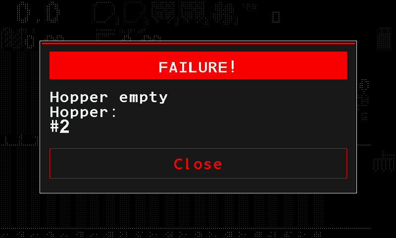

Fonctionnement des alarmes
Quand le Hectare One déclenche une alarme, ce que montre la fenêtre d'alarme, comment la fermer et comment utiliser les rubriques d'alarmes de ce manuel.
Une alarme est une fenêtre qui s'ouvre par-dessus l'écran de travail, accompagnée d'un signal sonore. Elle vous indique qu'un appareil — un capteur, un actionneur, un contrôleur de moteur — ou le système dans son ensemble a détecté un défaut. Les rubriques d'alarmes de cette section sont classées par appareil à l'origine de l'alarme. Cherchez les mots que vous voyez à l'écran, et non une description de ces mots.
Quand le boîtier déclenche une alarme
Un défaut n'est pas signalé à l'instant où il apparaît. La condition doit persister sans interruption pendant la durée réglée dans « Alarm delay » (temporisation des alarmes) avant que la fenêtre d'alarme s'ouvre.
| Réglage | Valeur |
|---|---|
| Où il se règle | Menu « Settings » (réglages), rubrique « Alarm delay ». Disponible au niveau d'accès « Operator » (opérateur). Voir Le menu Settings. |
| Plage | 2 à 20 secondes, par pas de 1 seconde. |
| Valeur par défaut | 3 secondes. Une valeur hors de la plage est ramenée d'elle-même à la valeur par défaut. |
Une temporisation courte fait réagir vite le boîtier, mais aussi aux perturbations brèves — un seul cahot, une brève interruption du flux de graines. Une temporisation longue garde l'écran tranquille, mais un vrai défaut peut durer jusqu'à vingt secondes avant que vous en soyez informé.
Deux cas ne suivent pas la temporisation :
- La communication perdue se compte en interrogations, et non en secondes. « Connection lost » (liaison perdue) apparaît après trois interrogations de suite sans réponse de l'appareil.
- Juste après le réglage d'un capteur, ses alarmes ne sont pas traitées pendant un court délai de blocage. Cela évite une rafale d'alarmes pendant la configuration d'un appareil.
La fenêtre d'alarme

- « FAILURE! » (défaillance) — le titre de toute fenêtre d'alarme, quel que soit le défaut. Ce n'est pas le défaut lui-même.
- Le texte de l'alarme — le défaut. Cherchez-le sous ce texte dans les rubriques d'alarmes.
- Le type d'appareil qui déclenche l'alarme — ici un capteur de trémie. Le même texte peut venir d'appareils différents ; cette ligne vous dit lequel.
- Le numéro de l'appareil — ici la trémie 2. Quand plusieurs appareils du même type déclenchent la même alarme, ils partagent une seule fenêtre et sont listés ensemble, par exemple #3-5,8.
- « Close » (fermer) — ferme cette alarme. Plus bas.
Les alarmes du boîtier lui-même portent dans leur texte la ligne « HOME - close message » (HOME : fermer le message) à la place d'une ligne d'appareil. Les alarmes des capteurs ne la portent pas.
Fermer une alarme
| Ce que vous faites | Ce qui se passe |
|---|---|
| Touchez le bouton rouge « Close » de la fenêtre, ou appuyez sur « HOME » | Cette alarme se ferme. S'il y en a d'autres en attente, la suivante s'ouvre. Tant que la fenêtre est ouverte, « HOME » est la seule touche éclairée. |
| Maintenez « HOME » | Toutes les fenêtres d'alarme ouvertes se ferment d'un coup et le boîtier revient à l'écran d'accueil. |
Fermer une fenêtre ne répare pas le défaut. Les alarmes d'un capteur encore actives sont listées sur son écran d'état — voir L'écran d'état du capteur.
Les alarmes sont masquées aux niveaux d'accès supérieurs
Aux niveaux « Agronomist » (agronome) et « Service » (service après-vente), les fenêtres d'alarme ne s'affichent pas. Elles ne sont pas perdues : elles attendent. Quand vous revenez au niveau « Operator », le boîtier écarte celles qui ont disparu et affiche celles qui sont toujours vraies, l'une après l'autre. Voir Niveaux d'accès.
Ce qui n'est pas une alarme : SLOWER et FASTER
Quand la vitesse d'avancement sort de la plage autorisée, aucune fenêtre d'alarme ne s'ouvre. L'écran d'accueil affiche à la place « SLOWER » (plus lentement) ou « FASTER » (plus vite), et continue de l'afficher pendant que vous corrigez la vitesse. Voir Indicateurs.
Comment les rubriques d'alarmes sont rédigées
Chaque alarme a son propre titre, avec le texte exactement comme à l'écran ; quand le message tient sur deux lignes du boîtier, les deux lignes sont données. En dessous : ce que le boîtier a détecté et ce qu'il faut vérifier, dans l'ordre où un mécanicien le vérifie — d'abord les contrôles rapides sur le boîtier, puis la machine, puis le capteur lui-même.
Votre machine fait quelque chose que cette page n'explique pas ? Écrivez à support@agriwelt.com — un ingénieur vous répond.